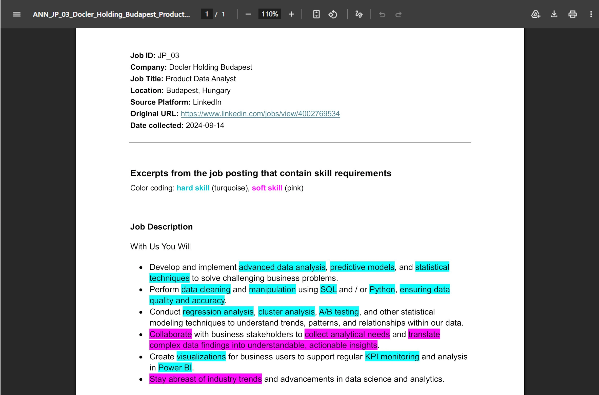
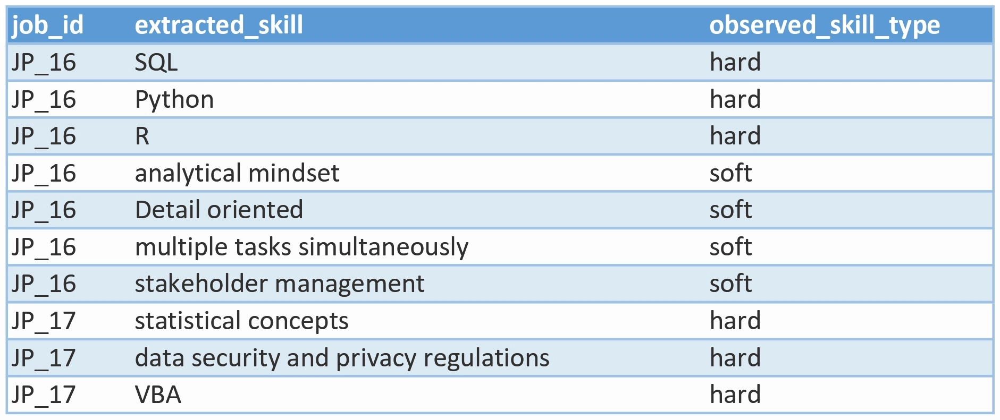
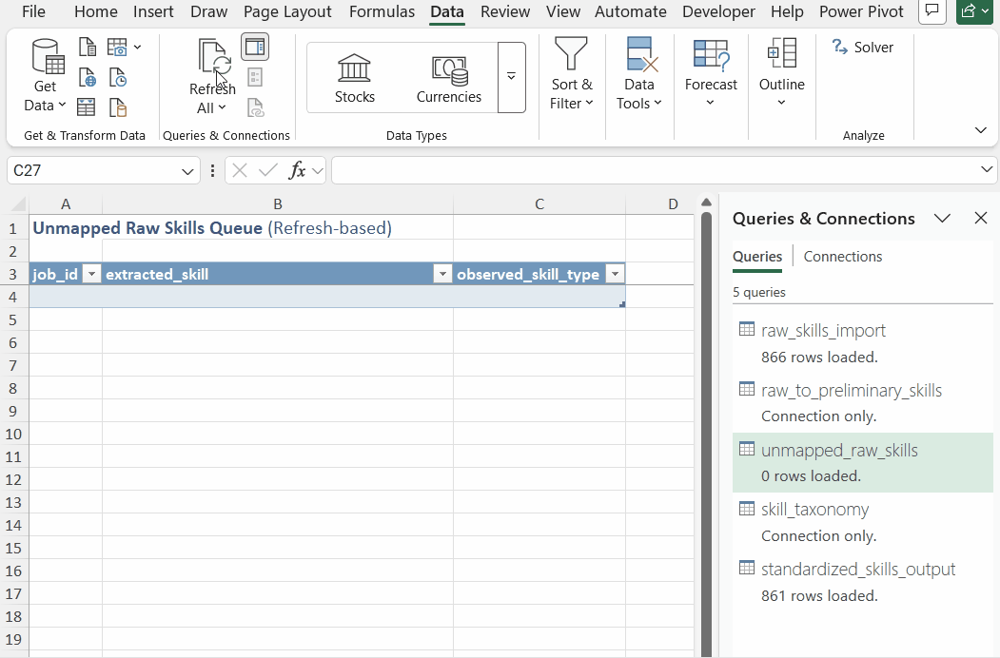
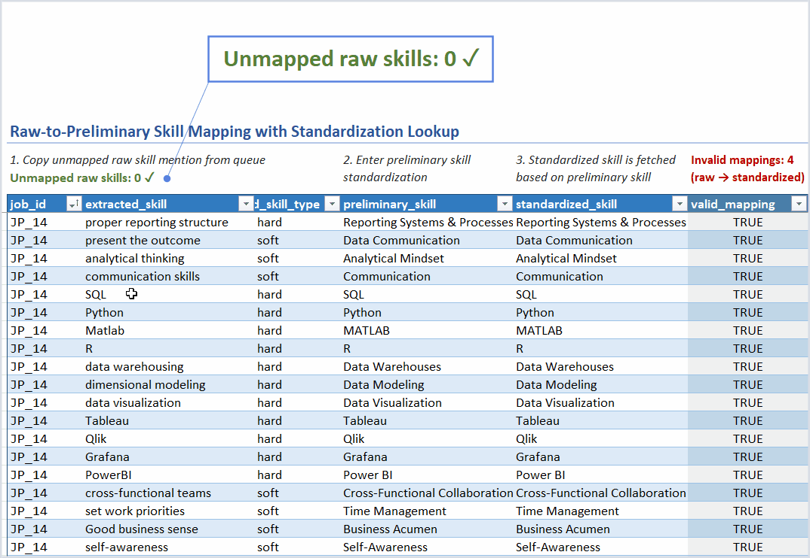
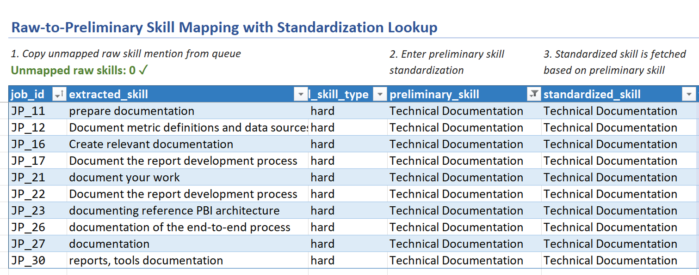
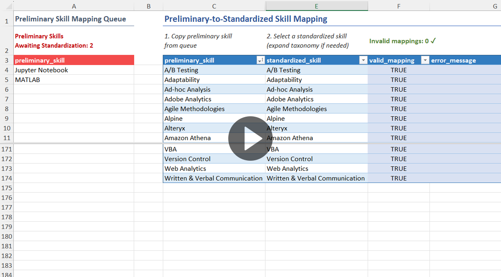
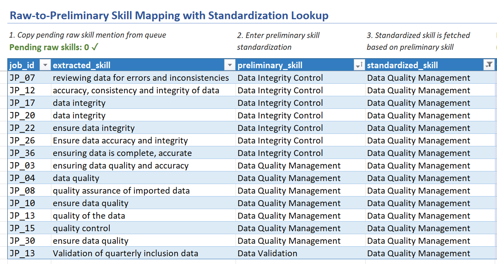
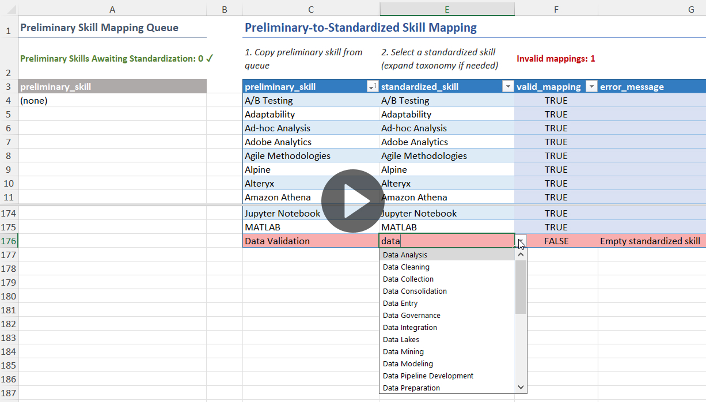

Skill Standardization Pipeline
Taxonomy-driven standardization pipeline built in Excel for dimensional skill demand analysis.
Taxonomy-driven standardization pipeline built in Excel for dimensional skill demand analysis.

Skill requirements across job postings are expressed in highly variable ways.
Differences in formatting (e.g., “Power BI” vs “PowerBI”) or phrasing (e.g., “multi-tasking” vs “handling multiple tasks concurrently”) fragment conceptually identical skills into multiple surface-level variants. These variations cause misleading frequency counts and unreliable aggregations.
As a result, raw skill mentions cannot be used directly for structured skill demand analysis without a prior standardization process.
In addition, the absence of a controlled taxonomy prevents the consistent grouping of skills into analytical categories and limits dimensional analysis potential.
To address these issues, I designed a taxonomy-driven standardization system for downstream analytical use that transforms raw skill mentions into standardized skills with hierarchical skill classification.
For each raw skill, the user first enters a preliminary standardization. Then, for each unique preliminary skill, the user selects a standardized skill from a drop-down menu that is populated from a controlled skill taxonomy.
The taxonomy can be expanded as needed with additional standardized skills classified by their skill type (hard or soft), category, and subcategory.
To prevent standardization drift, the raw-to-standardized skill mapping is fetched automatically via the preliminary mapping layer.
This multi-phase design helps separate initial data normalization from the curation of a final standardized dataset, reducing the risk of prematurely splitting or merging skill variants.
Mapping queues detect incoming raw and preliminary skill entries, ensuring that all imported skill phrases are captured for standardization.
The user copies pending entries from the queues into the respective mapping tables. This human-in-the-loop workflow helps prevent accidental overwrite within the mapping tables that may result from automatic row insertion.
Error-flagging fields within the mapping tables surface row-level data integrity issues, including empty values, duplicate entries, and unknown raw, preliminary, or standardized skills. The "valid_mapping" flag contains Boolean values that help filter invalid rows, while the "error_message" column displays the specific mapping issues.
Transforming raw skills into standardized ones is a non-destructive process that
preserves the source job_id and extracted_skill values,
maintaining a transparent and auditable data lineage.
Because standardized skills are selected from a controlled drop-down interface, taxonomy alignment is automatically enforced.
As a result, the final dataset of standardized skills linked to job postings and enriched with hierarchical classification enables normalized and dimensional analysis of skill demand across postings.
The pipeline architecture documentation is organized into the following sections:
The skill standardization pipeline imports a single CSV file that contains raw skill mentions extracted from job postings.
The imported CSV dataset is the output of a Python script that extracts highlighted skill mentions from annotated job posting excerpts.
The script processes structured Word documents with job posting metadata and posting excerpts with highlighted skill mentions, where highlight color encodes the observed skill type (hard or soft).
Extracted skill mentions are written to a CSV file with the fields: job_id,
extracted_skill, observed_skill_type, where each row
represents a single observed skill occurrence.

Each raw skill mention is defined by the following fields:
job_id: unique job posting identifier
extracted_skill: exact skill phrase used
observed_skill_type: skill type observed during annotation (hard or
soft). Used for preliminary grouping and filtering. Final classification is determined by standardized_skill_type
in the taxonomy. This separates initial observations from authoritative classification
decisions.

A refresh-based queue is used to detect raw skill mentions that have not yet entered the raw-to-preliminary mapping table.
An incoming raw skill is any row of the imported dataset that is not present in the raw-to-preliminary mapping table.
Incoming raw skills can occur in two situations:
The queue is implemented in Power Query via a left anti join on the raw skill mentions
dataset and the raw-to-preliminary mapping table. The join uses a composite key of
job_id, extracted_skill, and observed_skill_type,
reflecting the raw skill mention schema defined by the input dataset.

The refresh-based queue design introduces two operational limitations:
To address these operational limitations, a real-time queue status indicator is added above the mapping table.
The status indicator complements the queue by:

The queue status indicator is implemented as a dynamic formula that filters the imported raw skill mentions dataset for rows without a match in the raw-to-preliminary mapping table. The formula counts the filtered rows and outputs the number of incoming raw skills above the mapping table.
The first phase of skill standardization takes place in the raw-to-preliminary mapping table.
For each imported raw skill mention, the user enters a preliminary standardization, e.g.:
This phase aims to eliminate surface-level variation across skill mentions, serving as an initial vocabulary normalization layer.
Since preliminary skills are meant to stay close to the original phrasing, they retain semantic granularity. The second standardization phase then consolidates synonymous preliminary skills, producing a more analytically meaningful final dataset.
The mapping workflow starts by copying incoming raw skill mentions from the queue into the mapping table. This human-in-the-loop workflow helps prevent accidental overwrites that may result from automatic row insertion.
All original job_id, extracted_skill, and
observed_skill_type values get copied into the mapping table. As a result,
each skill mapping contains a complete source record and maintains a traceable data
lineage.
Once a raw skill mention is copied into the mapping table, the user enters a
preliminary_skill. The goal is to identify the core competency within the
extracted phrase, while preserving contextual nuance.
The following example illustrates the variation in raw job posting phrases that all map to the same preliminary skill ("Technical Documentation").

The resulting preliminary skills are later used in the second mapping phase, where
each unique preliminary_skill is assigned a taxonomy-aligned
standardized_skill.
The raw-to-preliminary mapping table automatically fetches the final standardizations using XLOOKUP against the preliminary-to-standardized mapping table.
This lookup architecture achieves:
The mapping table contains two validation columns, producing row-level data integrity metadata:
valid_mapping: contains Boolean flags indicating mapping success
or failure
error_message: displays the exact issue(s) causing a mapping failure
| Validation error | Trigger condition |
|---|---|
| Unknown raw skill | job_id, extracted_skill,
observed_skill_type combination not found in imported dataset |
| Duplicate raw skill | Multiple mappings exist for same raw skill |
| Empty preliminary skill | Preliminary skill field is blank (no preliminary standardization entered yet) |
| Unmapped preliminary skill | Preliminary skill is not mapped to a standardized skill in the second-stage mapping table |
| Overwritten standardization lookup formula | Standardized skill lookup formula was manually deleted or replaced |
| Empty standardized skill | Standardized skill field is blank because the preliminary skill is empty or unmapped |
| Invalid standardized skill | Standardized skill has a taxonomy-level error (duplicate skill or invalid classification) |
The mapping integrity validation is implemented as follows:
A dynamic formula-based queue surfaces preliminary skills that have not yet entered the preliminary-to-standardized mapping table.
A pending preliminary skill is a preliminary_skill in the raw-to-preliminary mapping table that is not present in the preliminary-to-standardized mapping table.
This occurs when a raw skill mention is sufficiently different from other raw skills to require a new preliminary skill standardization.

The queue is implemented as a dynamic array formula using FILTER on the raw-to-preliminary
mapping table for non-empty preliminary_skill values that have no match in the
preliminary-to-standardized mapping table.
When pending preliminary skills are present, the formula displays them as a sorted, unique list. Alternatively, the formula returns “(none)” to signal an empty queue state.
The queue is located on the same worksheet as the preliminary-to-standardized mapping table, to support standardization progress monitoring. As preliminary skills are added from the queue into the mapping table, the queue provides instant feedback by shrinking in size and updating its counter.
The second phase of the standardization pipeline takes place in the preliminary-to-standardized skill mapping table.
For each unique preliminary skill entered in the first stage, the user selects a taxonomy-aligned final standardization in the second stage. Selection is performed through a validated drop-down interface populated from a controlled skill taxonomy.
This mapping architecture achieves:
Final dataset consistency. The selection-based design ensures that only preapproved standardized skills enter the final dataset, as opposed to allowing ad-hoc standardization.
Consolidation of synonymous skills. Multiple preliminary skills can map to a single standardized skill, which helps create a more analytically meaningful final dataset.
Centralized and propagated updates. Final standardizations can be revised as the dataset evolves. Updating a final standardization only requires changing a single row in the preliminary-to-standardized mapping table.
The updated standardized skill is then automatically propagated to all related raw skill mentions through the preliminary mapping layer.

The workflow begins by copying pending preliminary skills from the queue into the mapping
table. Then, for each preliminary_skill, the user selects a
standardized_skill from a drop-down interface.
There are two possible workflows:
A. Select preexisting standardized skill
This happens when a preliminary skill is synonymous with an already existing standardized skill and introducing a separate standardization would risk fragmenting the final dataset.
B. Expand skill taxonomy prior to selection
This occurs when a preliminary skill corresponds to a tool, technology, or competence that is not yet present in the skill taxonomy.
In this case, the user first expands the taxonomy with the new standardized skill and its classification (at least the skill type: hard or soft). The new entry is automatically added to the mapping table’s drop-down menu, which the user can now select.

The mapping table contains two validation columns, producing row-level data integrity metadata:
valid_mapping: contains Boolean flags indicating mapping success
or failure
error_message: displays the exact issue(s) causing a mapping failure
| Validation error | Trigger condition |
|---|---|
| Empty preliminary skill | Preliminary skill field is blank |
| Unknown preliminary skill | Preliminary skill does not exist in the raw-to-preliminary mapping table |
| Duplicate preliminary skill | Multiple mappings exist for same preliminary skill (uniqueness is compared across cleaned entries) |
| Empty standardized skill | Standardized skill field is blank |
| Invalid standardized skill | Standardized skill either does not exist or has a taxonomy-level error (duplicate skill or invalid classification) |
The mapping integrity validation is implemented as follows: